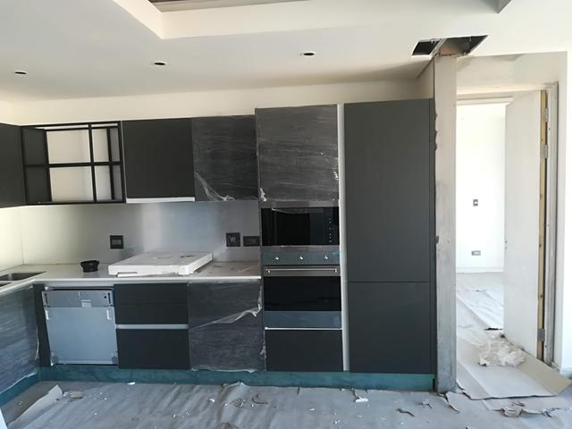
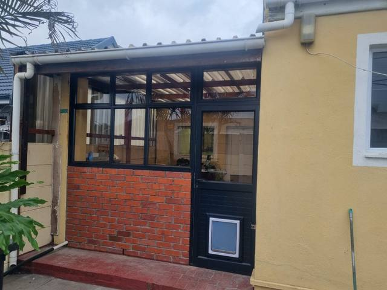

Renovation & woodworks in Sea Point
Sea Point is lined with apartment blocks, from older art deco buildings to modern units, where kitchens and storage are often small and exposed to sea air. We're often asked for apartment kitchen renovations, built-in wardrobes, and moisture- and salt-resistant finishes.
Examples of our work
From our projects across Cape Town.





Working in Sea Point
Sea Point runs along the Atlantic coast below Signal Hill and Lion's Head, with its promenade and long rows of apartment blocks, from 1930s art deco buildings to modern towers. Most homes are sectional-title flats, so renovations need body corporate approval and must respect building hours and lift bookings. Kitchens and storage are often small, and the sea air is hard on hardware. Built-in wardrobes and compact kitchens are the jobs we are most often asked about here.
Kitchens · Built-in cupboards · Doors & garage doors · Furniture · Decks · Renovations →
Questions from Sea Point
Can you renovate an apartment kitchen in Sea Point?
Yes. We measure, build in our workshop and install with minimum disruption to neighbours, coordinating access with the building.
Will my Sea Point body corporate allow a kitchen renovation?
Most do, with approval first. We provide the plan, timeline and working hours they usually ask for.
Can you keep an art deco feel in a new kitchen?
Yes. Simple lines, curved details and the right handles can suit an older building while using modern materials.
Do you protect lifts and corridors during installation?
Yes. We protect common areas while delivering and installing, and leave them clean when we finish.